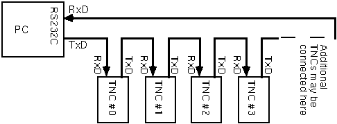

6PACK a "real time" PC to TNC protocol
by Matthias Welwarsky, DG2FEF @ DB0KLN.DEU.EU, Am Pelz 77c, 64295 Darmstadt, Germany
translated by Tom Sailer, HB9JNX @ HB9W.CHE.EU, Weinbergstraße 76, 8408 Winterthur, Switzerland
converted to HTML and indexed by Alexander Stohr, DG3MMF @ OE9XPI.AUT.EU, Schönauer Str. 5, 88131 Lindau, Germany
During the development of the PC/FlexNet software package, there was a strong desire to use
the existing hardware, especially the very widespread TNC2, which populates almost every
packet radio station nowadays. Sysops of TheNetNode digipeaters also showed much interest,
since many TNN nodes use TNC2 devices connected using a KISS token ring.
Existing TNC protocols have severe disadvantages. The KISS protocol does not allow much
influence on the channel access. This prevents the implementation of alternative channel access
schemes, such as DAMA or OPTIMA. The so-called "WA8DED Hostmode" does not provide
data transparency, and its throughput is very limited.
The basic concept of 6PACK was developed at the end of 1993 by Ekki Plicht, DF4OR,
Henning Rech, DF9IC and Gunter Jost, DK7WJ. It was further developed for use in the
PC/FlexNet software package by Gunter Jost, DK7WJ, and Matthias Welwarsky, DG2FEF.
The protocol then did not support multiple TNCs connected in a ring topology. It only allowed
for one TNC per asynchronous serial interface. It was then found that a ring topology required
different protocol features than a simple point to point connection.
The current revision of the protocol has many additional features compared to the first version. It
now allows a ring topology of up to eight TNCs connected to a single asynchronous serial
interface of the computer. The ring wiring is hardware compatible with the existing token rings
used by the "TheNetNode" software.
6PACK provides:
The asynchronous serial interface parameters are: 8 data bits, 1 stop bit, no parity bit. The baud rate on the ring must be at least twice the highest HDLC bit rate of the TNCs connected to the ring. RTS/CTS is ignored, RTS however should toggle about every 10ms to reset an eventually connected hardware watchdog. The TNC software should implement another watchdog which terminates any transmission if no further data is received from the PC. To reset this watchdog, any command sent to the TNC will do, for example an LED control command. Bits 6 and 7 of every byte distinguish between channel data and control codes.
|
76 543210 |
meaning |
|
00 xxxxxx |
channel data |
|
x |
data |
Control codes always consist of only one byte. Code groups of more than one byte are never
used. Therefore, control codes require little transmission capacity. Control codes are completely
independent from previous or following control codes. This makes the protocol very robust. An
exception to this rule is, as in the KISS protocol, the "start/end" command, which always
belongs to a data packet, and the channel data itself. Because two bits are used to distinguish
between channel data and control codes, only six bits per byte are available for channel data.
Therefore, three data bytes have to be encapsulated into four "6PACKs", according to the
following scheme. Note that a channel data byte does not correspond directly to a byte on the
asynchronous serial interface.
|
|
1st 6PACK |
2nd 6PACK |
3rd 6PACK |
4th 6PACK |
|---|---|---|---|---|
|
Codes |
00xx.xxxx |
00xx.yyyy |
00yy.yyzz |
00zz.zzzz |
|
Bits |
54.3210 |
76.3210 |
76.5410 |
76.5432 |
The symbols "x", "y" and "z" with the corresponding bit numbers represent the channel
data. This rather complex scheme was chosen since it requires the least possible shift operations
to extract the channel data from the 6PACKs.
The fast transmission of real time events is achieved by using priority codes. The TNC for
example transmits an appropriate command code at every change of the DCD line. Additionally,
the TNC sends the DCD state about every second to allow recovering of a potentially lost
command code.
The coding of the command codes is shown in Table 1. The code 0xC0 (1100 0000) is not used
in 6PACK; this should prevent an accidentally connected KISS TNC from sending.
The data transmission between TNC and PC
The following simple rules govern the data transmission between the TNCs and the PC.
Each packet of channel data has the following structure:
|
SOF |
TXD |
DATA |
CS |
SOF |
SOF Start/end of Frame
TXD TX delay in units of 10ms
DATA Channel data
CS Checksum byte
This structure results after extracting the data from the 6PACKs. The TX delay can be reconstructed only after the second 6PACK with channel data.
|
H L |
command |
direction |
|
0100 0ccc |
start/end of frame |
PC <--> TNC |
|
011x yccc |
LED: STA=x; CON=y |
PC --> TNC |
|
10xy zccc |
priority message |
|
|
1100 0000 |
not used (KISS FEND) |
|
|
1110 0ccc |
send calibration pattern for 15s |
PC --> TNC |
|
1110 1ccc |
TNC address |
PC <--> TNC |
Transmission sequence on the radio port
Transmission on the radio port take place according to the following scheme:
Automatic configuration of the TNC addresses
Automatic configuration of the TNC addresses is achieved by the following simple scheme.
Since every TNC on the ring behaves according to these rules, TNC addresses are allocated
sequentially. The command transmitted by the last TNC and received by the PC contains the
number of connected TNCs.
6PACK provides some advantages over KISS, most notably the ability to transmit real time data and thus the ability to implement the channel access algorithm in the PC.
KISS achieves data transparency by prefixing some data bytes by an escape code. This means that the transmission capacity needed to transmit a data packet depends largely on the contents of the packet. In the worst case, twice the bandwith is needed. With 6PACK, the transmission capacity needed is exactly predictable, if one neglects the real time commands inserted into the data stream.
If one continues the comparison and compares 6PACK rings to KISS token rings, the advantages of 6PACK become even clearer. With a KISS token ring, the response time of the system depends on the loading of the ring. Since the token ring does not transmit DCD and PTT states, each TNC needs to implement its own channel access algorithm, and usually a rather primitive SlotTime/p-Persistence algorithm is used. Also, there is no timing relation between the receipt of a packet over the air and the arrival of the packet in the PC. The PC does not know when the packet is actually sent. (Note by the translator: When the FRACK timer expires and the PC retransmits a frame, the original frame may still wait for transmission, since the channel was busy all the time. Then the retransmission of the frame produces additional unnecessary load on an already congested channel)
This usually leads to the transmission of frames with outdated sequence numbers and to strange effects if one tries to implement a DAMA master on a KISS token ring. With high HDLC bit rates and high load on the ring, the transmitter may be interrupted between packets, which leads to a much increased collision probability.
6PACK provides no mechanisms which would allow the TNC to implement its own channel access. Therefore, the channel access has to be done in the PC. This is a significant advantage, especially on half duplex links.
Short response times, which are needed by, for example, a DAMA slave, cannot be achieved with KISS. The transmitter keying is always delayed by the time it takes to transmit the packet on the asynchronous serial interface.
With 6PACK, real time data and channel data are distinguishable. Therefore, the delay of real time data does not depend on the ring loading, and it can be calculated from the ring bit rate and the number of TNCs on the ring. Each TNC delays the byte by between 10 and 20 bits, which is 260 to 520 µs at 38.4kBit/s. The longest possible delay at 38.4kBit/s is therefore 8 * 520 µs = 4.2 ms.
This means that it does not take more than 4.2 ms to key the transmitter of a particular TNC, or to communicate the DCD state to the PC. This way, even a ring of TNCs may be controlled quite precisely, but the additional delay of a ring may increase the collision probability slightly on a half duplex channel.
A flaw of 6PACK is that the TX delay may be longer than requested. This happens every time a packet is delayed more than the requested TX delay compared to its preceding "TX counter + 1" command. However, measures should be taken to prevent the peer station from complaining about the too long TX delay.
Last, but not least: Unlike with KISS, the TNC LEDs can be controlled by the host PC directly. They are used just like the LEDs on the RMNC3 card.
Some remarks from the translator
Figure 1
Figure 1 shows the wiring of a TNC ring.
FlexNet allows different channel access algorithms to be used. It may use a modified p-
persistence algorithm, DAMA, or OPTIMA in the future. FlexNet allows even multiple data
rates and modulation schemes to share one radio channel. For example, combined 1200 Baud
AFSK / 9600 Baud FSK user accesses can be found in Europe, since it is often not possible to
get different frequencies for both modes, because the 70cm and 23cm bands are very crowded.
In this case, a 1200 baud AFSK and a 9600 baud FSK modem are connected to the same
transmitter in parallel. Thus the channel access algorithm spans multiple channels. In
PC/FlexNet, the channel access for radio channels is done in the L2 kernel. So L1 drivers and
6PACK TNCs must not implement their own channel access algorithm.
TX delay is the time between keying the transmitter and starting to send the first packet. This
time allows the radio to start the transmitter. HDLC flags are usually sent during this time. TX
delay is specified in 10ms units. FlexNet also monitors the TX delay of the other stations on the
channel, and complains if a station uses an excessively long TX delay (more than 100ms in
excess to what the transmitter needs). PC/FlexNet L1 drivers and thus 6PACK TNCs should
listen for a series of HDLC flags preceding a data packet and report the duration of this
sequence in the TX delay byte of the received data packet. Note that only error free reception of
the flags should be accepted. In the unlikely event that the hardware does not support the
measuring of the TX delay, zero should be returned. Zero may also be returned for every packet
other than the first of a particular transmission. If, due to overload on the ring, the required TX
delay cannot be met, the sending station must make sure the peer does not complain about the
long TX delay. This can be done by inserting an ABORT sequence, for example.
Note that for the sake of fast retransmission of priority commands, hardware FIFOs in the
asynchronous serial interface should not be used.
The translator would like to thank Matthias Welwarsky DG2FEF and Gunter Jost DK7WJ for
the assistence, and Esther Oswald for correcting this translation.
[1] Karn, Phil KA9Q, and Mike Chepponis K3MC, The KISS TNC: A simple Host-to-TNC
communications protocol, 1990
[2] Welwarsky, Matthias DG2FEF, DAMA und OPTIMA, TheFirmware Version 2.7, 1994